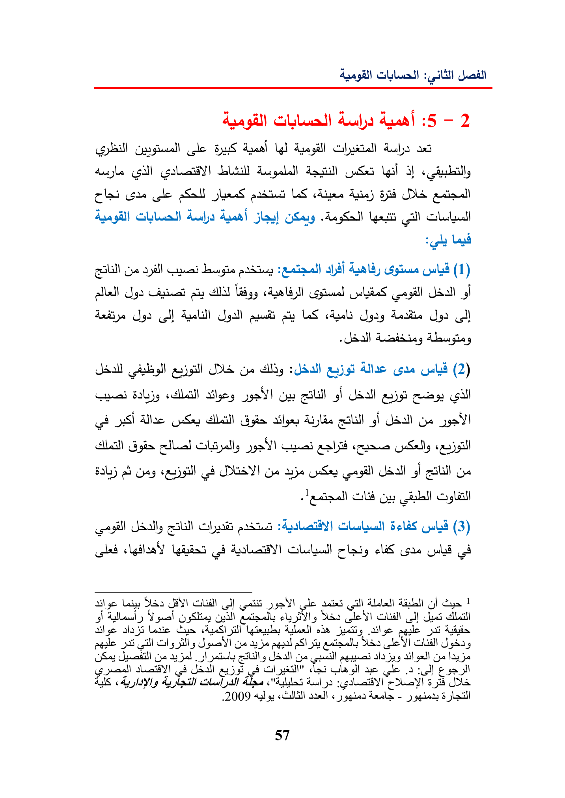

dca-2(leArealdusa(gillSeiUl3GrecoleLSAsin)DEAudajlay)GSaigYatyallgialal(11)allel)AIMllSpallquaLSchugaypdolAlunUSste(2)salBaljyoa)GngiUdallGillcetSiSa;SysghGeGotsya)caliBL)abeyDESYGeayeghaLysGlSallyysSolas(3)Aslan)classGreUsbJAY!OUcitgatgleacted)daaGo)GusgualonlclDES)SalNyealaCaeAgheallode55hyllySpelyejoaS)sisSagleJghSy(yoayjalTsSlGeetlalaJalalOsSalajcladGilasllaeAlsytdlejoThey!3aJD2009daall«yggied-_)57